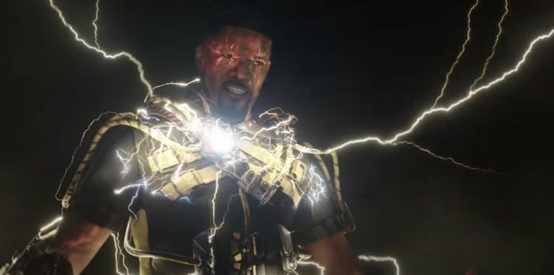

Duende Verde
VILLANOS
DUENDE VERDE WILLEM DAFOE

El primer villano del trepa muros de la trilogia de Sam Raimi y Tobey Maguire fue nada mas y nada menos que su villano principal de los comics el Duende Verde interpretado por el gran actor Willem Dafoe.Que no duraria mas que una pelicula ya que terminaria muriendo su personaje en la cinta pero 20 años despues volvio para retomar su papel una vez mas.
DOCTOR OCTOPUS ALFRED MOLINA
El segundo villano en trilogia de Sam Raimi y Tobey Maguire fue el Doctor Octopus.Interpretado por otro gran actor, Alfred Molina.Siendo esta la mejor pelicula de Spiderman de esta trilogia, su personaje se sacrificaria luego de darse cuenta de que podia destruir la tierra.18 años despues volveria a interpretar a este gran villano del trepamuros
EL HOMBRE DE ARENA THOMAS HADEN CHURCH
El ultimo villano en enfrentarse el Spiderman de Tobey Maguire seria el Hombre de Arena interpretado por Thomas Haden Church donde haria un gran papel pese a que la pelicula no fuera tan buena.El actor volveria a encarnar su personaje 14 años despues.
EL LAGARTO RHYS IFANS
El primer villano del Spiderman de Andrew Garfield seria el Lagarto interpretado por el actor Rhys Ifans donde el diseño del personaje no seria de mucho agrado para muchos.En una buena pelicula del trepa muros y 9 años despues volveria para interpretar a su personaje nuevamente
ELECTRO JAMIE FOXX
El ultimo villano que tendria la saga de Marc Webb y Andrew Garfield seria el mismisimo Electro interpretado por el gran Jamie Foxx.En lo que para muchos es la peor pelicula del trepa muros aunque tiene una escena muy memorable a los comics que es la muerte de Gwen Stacy a manos del Duende Verde interpretado por Dane DeHann.7 años despues Jamie Foxx retomaria su papel como Electro en Spiderman No Way Home y con un diseño mucho mas clasico